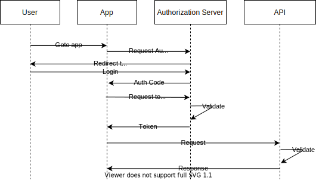
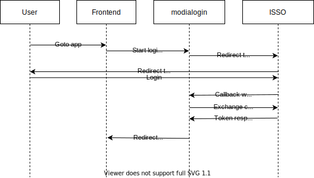

class: center, middle # Sikkerhet - Modialogin ??? Vi skal snakke litt om hvordan sikkerheten er ivaretatt for løsningene våre. I all hovedsak kommer vi til å titte på løsningen i fagsystemsonen, men det er tilsvarende oppsett i selvbetjeningsonen. --- # Agenda 1. Litt om kryptografien 2. Applikasjonene våre 3. Eksempel ??? ## Kryptografien Bare så vi vet litt om hva som skjer i bakkant, så tar vi ett titt på kryptografien som er i bruk her. Med det tenker jeg på; * RSA, public-key kryptoen vi bruker * JWT, JSON Web Token * JWK, JSON Web Key * JWS, JSON Web Signature * JWE, JSON Web Encryption (Denne brukes ikke på huset, så denne hopper vi over) * OAuth/OIDC, openId Connect /OAuth Om alle i rommet har en god forstårelse av hva forkortelsene er, og hvordan det fungerer så kan vi hoppe over de. Liten håndsopprekning? ## Applikasjonene våre Hvilke applikasjoner har vi som vi bruker, og hvordan fungerer de sammen.kryptografien ## Eksempel Vi gjøre en virtuell gjennomgjøres av en http-request mot våre apper, slik at vi kan få tittet litt på kode også. --- # RSA $$ (m^e)^d \equiv m\pmod n \\\\ n, e: \text{public key} \\\\ n, d: \text{private key} \\\\ m: \text{message} $$ <div class="hidden"> $$ (m^e)^d = m^{(ed)} = m^{(de)} = (m^d)^e \equiv m\pmod n $$ </div> <div class="credits"> <a target="_blank" href="https://en.wikipedia.org/wiki/RSA_(cryptosystem)">https://en.wikipedia.org/wiki/RSA_(cryptosystem)</a> </div> ??? public-key kroptosystem som er er asymmetrisk kryptosystem, som betyr at vi har to nøkler. En public-key, og en private-key. Som navnene antyder så kan den ene deles fritt, mens den andre må holdes hemmelig. Og alt dette fungerer pga denne sannheten (**NEXT SLIDE**). Matematikken bak RSA utnytter også at primtallfaktorisering er vanskelig. Mens det å multiplisere tall er enkelt. På den måten lages en en-veis funksjon, hvor det er enkelt å gjøre og verifisere, men vanskelig å reversere. Vi skal ta en liten titt på det. Men dette er ikke så supert viktig, men litt interessant for noen. --- # RSA $$ (m^e)^d \equiv m\pmod n \\\\ n, e: \text{public key} \\\\ n, d: \text{private key} \\\\ m: \text{message} $$ <div> $$ (m^e)^d = m^{(ed)} = m^{(de)} = (m^d)^e \equiv m\pmod n $$ </div> <div class="credits"> <a target="_blank" href="https://en.wikipedia.org/wiki/RSA_(cryptosystem)">https://en.wikipedia.org/wiki/RSA_(cryptosystem)</a> </div> ??? public-key kroptosystem som er er asymmetrisk kryptosystem, som betyr at vi har to nøkler. En public-key, og en private-key. Som navnene antyder så kan den ene deles fritt, mens den andre må holdes hemmelig. Matematikken bak RSA utnytter faktum at primtallfaktorisering er vanskelig. Mens det å multiplisere tall er enkelt. På den måten lages en en-veis funksjon, hvor det er enkelt å gjøre og verifisere, men vanskelig å reversere. Vi skal ta en liten titt på det. Men dette er ikke så supert viktig, men litt interessant for noen. --- # RSA $$ p,q:\text{ noen store random primtall} \\\\ n=pq \\\\ \begin{eqnarray} Finn\ \lambda(n) &=& lcm(\lambda(p), \lambda(q)) \nonumber \\\\ &=& lcm(\varphi(p), \varphi(q)) \nonumber \\\\ &=& lcm(p - 1, q - 1) \nonumber \end{eqnarray} $$ <div class="credits"> <a target="_blank" href="https://en.wikipedia.org/wiki/RSA_(cryptosystem)">https://en.wikipedia.org/wiki/RSA_(cryptosystem)</a> </div> ??? Velger først to random store primstall P OG Q lamda-tegnet er "Carmichael's totient function", phi-tegnet er eulers totient funksjon. Men siden "PQ" er primtall så er disse like, og alltid lik til P-1/Q-1. "LCM" (least common multiple) er lik produktet delt på GCD (greated common divisor) som kan enkel regnes ut vha euclidean algorithm. PQ holder hemmelig, mens N er en del av publickey. lambda(N) holdes også hemmelig. Selvom utregningen av lambda(n) er enkel, så er det ikke så enkelt om man ikke kjenner til PQ, som holdes hemmelig. Valg av E er litt arbitrært ofte 2^16+1 blir brukt så lenge det holder begrensningen om gcm, e.g er co-prime med totient-verdien. Utregningen av D kan gjøres effektivt takket være at E og lamda(N) er co-prime. Og holdes såklart hemmelig i ettertid. --- # RSA $$ p,q:\text{ noen store random primtall} \\\\ n=pq \\\\ \begin{eqnarray} Finn\ \lambda(n) &=& lcm(\lambda(p), \lambda(q)) \nonumber \\\\ &=& lcm(\varphi(p), \varphi(q)) \nonumber \\\\ &=& lcm(p - 1, q - 1) \nonumber \end{eqnarray} $$ $$ Velg\ e, 1 < e < \lambda(n)\text{ and }gcd(e, \lambda(n))=1 $$ <div class="credits"> <a target="_blank" href="https://en.wikipedia.org/wiki/RSA_(cryptosystem)">https://en.wikipedia.org/wiki/RSA_(cryptosystem)</a> </div> ??? public-key kroptosystem som er er asymmetrisk kryptosystem, som betyr at vi har to nøkler. En public-key, og en private-key. Som navnene antyder så kan den ene deles fritt, mens den andre må holdes hemmelig. Matematikken bak RSA utnytter faktum at primtallfaktorisering er vanskelig. Mens det å multiplisere tall er enkelt. På den måten lages en en-veis funksjon, hvor det er enkelt å gjøre og verifisere, men vanskelig å reversere. lamda-tegnet er "Carmichael's totient function", phi-tegnet er eulers totient funksjon. Men siden "PQ" er primtall så er disse like, og alltid lik til P-1/Q-1. PQ holder hemmelig, mens N er en del av publickey. lambda(N) holdes også hemmelig. Selvom utregningen av lambda(n) er enkel, så er det ikke så enkelt om man ikke kjenner til PQ, som holdes hemmelig. Valg av E er litt arbitrært ofte 2^16+1 blir brukt så lenge det holder begrensningen om gcm, e.g er co-prime med totient-verdien. Utregningen av D kan gjøres effektivt takket være at E og lamda(N) er co-prime. Og holdes såklart hemmelig i ettertid. --- # RSA $$ p,q:\text{ noen store random primtall} \\\\ n=pq \\\\ \begin{eqnarray} Finn\ \lambda(n) &=& lcm(\lambda(p), \lambda(q)) \nonumber \\\\ &=& lcm(\varphi(p), \varphi(q)) \nonumber \\\\ &=& lcm(p - 1, q - 1) \nonumber \end{eqnarray} $$ $$ Velg\ e, 1 < e < \lambda(n)\text{ and }gcd(e, \lambda(n))=1 $$ $$ d\equiv e^{-1}\pmod{\lambda(n)} $$ <div class="credits"> <a target="_blank" href="https://en.wikipedia.org/wiki/RSA_(cryptosystem)">https://en.wikipedia.org/wiki/RSA_(cryptosystem)</a> </div> ??? public-key kroptosystem som er er asymmetrisk kryptosystem, som betyr at vi har to nøkler. En public-key, og en private-key. Som navnene antyder så kan den ene deles fritt, mens den andre må holdes hemmelig. Matematikken bak RSA utnytter faktum at primtallfaktorisering er vanskelig. Mens det å multiplisere tall er enkelt. På den måten lages en en-veis funksjon, hvor det er enkelt å gjøre og verifisere, men vanskelig å reversere. lamda-tegnet er "Carmichael's totient function", phi-tegnet er eulers totient funksjon. Men siden "PQ" er primtall så er disse like, og alltid lik til P-1/Q-1. PQ holder hemmelig, mens N er en del av publickey. lambda(N) holdes også hemmelig. Selvom utregningen av lambda(n) er enkel, så er det ikke så enkelt om man ikke kjenner til PQ, som holdes hemmelig. Valg av E er litt arbitrært ofte 2^16+1 blir brukt så lenge det holder begrensningen om gcm, e.g er co-prime med totient-verdien. Utregningen av D kan gjøres effektivt takket være at E og lamda(N) er co-prime. Og holdes såklart hemmelig i ettertid. Inversen her ikke ikke den normale 1/e-varianten siden vi driver modulo-artimetikk. Men det kan igjen løses vha euclidean algoritme. --- # RSA - Signering $$ h = hash(m); \\\\ (h^e)^d = h^{(ed)} = h^{(de)} = (h^d)^e \equiv h\pmod n $$ <div class="credits"> <a target="_blank" href="https://en.wikipedia.org/wiki/RSA_(cryptosystem)">https://en.wikipedia.org/wiki/RSA_(cryptosystem)</a> </div> ??? public/private keys kan brukes til både, signering/verifisering og kryptering/dekryptering. For oss er det signering som er interessant. Signering skjer ved at avsender bruker sin private-key (`h^d`) på hashen (h) (typisk SHA-256), mottager bruker deretter avsenders public key (`(h^d)^e`) og sammenligner hash-verdien. Om det er stemmer overens så vet mottager at avsender er den man sier (eller i det minste har tilgang på deres private-key). Her bruker vi den for å kryptere en hash, som etterpå kan verifiseres vha public-keyen, e.g en signatur. For kryptering av meldinger kan man bruke en annen persons public-key, før man sender meldingen. Den vil da kun være lesbar for den personen, siden man trenger private-keyen for å dekryptere den. Dette kan også kombineres, e.g, at man ved sending bruker sin egen private-key (for signering) og deretter mottagers public-key (for krypering). Mottager er da den eneste som kan lese meldingen, og kan verifisere at du er den eneste som kan ha vært avsenderen. Men dette er ikke noe vi bruker, så går ikke nærmere inn på dette. Så hvordan ser dette ut om vi prøver å utnytte dette til å sikre løsningene våre. Svaret er jo da JWT. --- class: cols two # JSON Web Token med Signatur .col[ <pre class="jwt"> <span class="jwt__header">eyJraWQiOiIwNWVhZTY2Zi1iODA2LTRhYWUtYTk2OS0zMjJkODM0YmM5MzYiLCJhbGciOiJSUzI1NiJ9</span>. <span class="jwt__claims">eyJpc3MiOiJzdHViIiwiYXVkIjoiZm9vIiwic3ViIjoiWjk5OTk5OSIsImV4cCI6MTYzMjY4MTA0NywiaWF0IjoxNjMyNjgwNDQ3fQ</span>. <span class="jwt__signature">dwfT9E4GaP5xBqu5IZFidKScmsC1na9n1I-bvgyOriF6swaGrYGoQIl9GMpxEghCRF3FJPwps4o8xK60eFArcrWFBfQd4jXHvwVEWEaI1Ae1v0nMvH3CADBfcBY8uFWrZBCxt8Efve6HcqoFpOMe_G5nHNZ-laJEFfjIRamk-56Q3SqOUHr_EKaJC6b8l6C2XQPEhBMukZ5cf1gCbqdE9XjQTYPWUSuIVV2XZueNjoCBKyripZfo7Fgc7zpIwksgRt8cK8gQRhh3FKQKphtWi45yzw8ym4XWVWTBLPHBhscv2XHbgwFyYe8zL8OisVfPeuWFpDCGXVzbbCuVudd9Ow</span> </pre> ] .col[ <div class="jwt"> <pre class="jwt__header"> { "kid": "05eae66f-b806", "alg": "RS256" } </pre> <pre class="jwt__claims"> { "iss": "stub", "aud": "foo", "sub": "Z999999", "exp": 1632682041, "iat": 1632681441 } </pre> </div> ] <div class="credits"> <a target="_blank" href="https://datatracker.ietf.org/doc/html/rfc7519#section-4.1.1">https://datatracker.ietf.org/doc/html/rfc7519</a> </div> ??? Da har vi tittet litt på matematikken bak, så nå skal vi bevege oss litt mer over til det vi faktisk bruker. På skjermen er det ett eksempel på ett JWT (JSON Web Token) (til venstre) og samme tokenet dekodet til høyre. Dette er tilsvarende visningen man kan se på jwt.io. Vi kan se at tokenet består av tre deler * JOSE-header (Javascript Object Signature Encryption), Base64 * Body, som inneholder ett sett av "claims", Base64 * Signaturen Vi kan også se at headeren refererer til "RS256", dette indikerer at det er brukt RSA + SHA-256. SHA-256, for de som ikke er kjent med den, er en hashing-funksjon alà MD5, men sikrere. Dette kommer vi litt mer innpå når vi skal titte på hvordan våre løsninger knytter inn mot dette. Men det er greit å vite at det er faktisk ett sånt token vi driver å sender fra frontend til backend, når vi ønsker å sjekke om noen er logget inn. I eksempel har vi tatt med de vanligste "claimene" vi titter på, men her kan det ligge mye annet også (Se RFC7519) Men en rask gjennomgang av hva disse betyr: * iss: issuer. Identifiserer hvem som ga oss tokenet * sub: subject. Identifiserer hvem tokenet representerer * aud: audience. Identifiserer mottager av tokenet * exp: expiration time. Utløpsdatoen til tokenet * iat: Issued at. Når tokenet ble utstedt Så hvordan får vi tak i ett sånt token da? Hva er flyten? --- # OAuth Authorization Code flow <div class="center-text">  </div> <div class="credits"> <a target="_blank" href="https://blog.postman.com/pkce-oauth-how-to/">https://blog.postman.com/pkce-oauth-how-to/</a> </div> ??? Flyten vi bruker heter "Authorization Code Flow" og er spesifisert som en del av OAuth2.0 spec-en. Diagrammet på sliden viser flyten når en bruker kommer til en av våre løsninger, og vi trenger å gjøre innlogging. Vi skal gå gjennom punkt for punkt, og etterpå skal vi titte på hvordan dette er implementert i våres apper. 1. click login link. SBS har en login-knapp, men typisk skjer dette steget ved at man prøver å gå til websiden. 2. request auth code. Det startes en flyt for å få logget inn bruker. 3. authenticate and consent. Bruker får typisk opp ett skjema, og må logge inn. 4. auth code. Appen får da tak "Auth code". Denne brukes senere av appen, men er ikke noe bruker noen gang ser. 5. auth code + clientId + clientSecret sendes på nytt til AuthServer for å få tak i IdToken + AccessToken. 6. AccessToken blir returnert og vi er klare til å gjøre kall til APIet Så hvordan relaterer dette til våre apper? --- # Modialogin flow <div class="center-text">  </div> ??? Vi bruker i bunn og grunn samme flyten, men har delegert mye av arbeidet over til modialogin-appen. Dette er litt som "loginservice" gjør i SBS (som er deprecated men men). Tanken er relativt rett frem. Frontend-appene sjekker bare om bruker er logget inn, hvis ikke så sendes de til modialogin. Hvis de er logget inn så er jo alt greit, og vi kan gi dem koden for frontend vår. Både "Frontend" og "Modialogin" biten av diagrammet her ligger i repoet våres som heter "modialogin". Så jeg tenker vi skal spinne opp den for å titte litt nærmere på hvordan koden der er. Til slutt tar vi oss en runde og titter litt på hvordan dette fungerer i preprod eller vha modialogin-test-riggen. Så kan vi få tittet litt på kode også. :) --- class: center, middle # KODE <div class="credits"> <a target="_blank" href="https://github.com/navikt/modialogin">https://github.com/navikt/modialogin</a> </div> ??? <a target="_blank" href="https://github.com/navikt/modialogin">https://github.com/navikt/modialogin</a> --- # Andre nyttige ting * JWT: JSON Web Token * OAuth: Authorization Framework * OIDC: OpenID Connect (Bygger på OAuth) * SSO: Single Sign-on * ISSO: Intern SSO * ESSO: Ekstern SSO * STS: Security token service (STS'en, gandalf, TokenX/TokenDings) ??? Bare litt nyttige ord/uttrykk på slutten. Det meste her er ikke super nyttige, men konseptet om en STS er noe som er litt relevant for oss også. Det er en applikasjon som kan bytte ut ett token med ett annet ett f.eks kan det bytte et JWT til SAML slik at det kan brukes med SOAP-tjenester. Kan også bytte ut JWT med ett annet JWT som har andre rettigheter og få ett såkalt on-behalf-of token. Dette blir mer og mer relevant for rest på NAV, men for oss bruker vi bare sånt når vi bruker SOAP. --- class: center, middle # The end